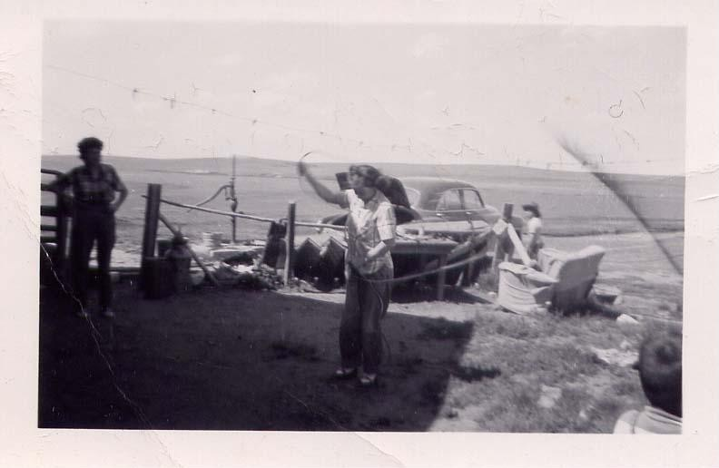

A Photograph of My Grandma Margie
March 20241,124 words

What I remember most about Grandma Margie was her gray-blue eyes. She had smiling eyes, a trait she inherited from her Blackfeet lineage. Although three quarters colonizer, she looked more Blackfeet than white. She also had the cheekbones of her native grandparents and just enough pigmentation left to identify her as such. She was short enough to make you wonder how she got around in her old pickup truck. She had good posture, but when she walked, she had the appearance of someone hauling a sled behind her, filled with the weight of the world. I imagine it was an epigenetic trace of the gait you might take on if you were in a band of indigenous folk, before whites and horses, when you loaded up all your belongings that couldn’t fit on the pack dogs. You tied them onto a travois and carried your burden yourself, following the buffalo to wherever they may roam.
After heading down to her barn to feed somebody else’s horses, or to bust the ice out of her chickens’ water dishes to give them a refill, she’d head to the house to pour herself a cup of coffee and turn on public radio. Sometimes she’d pop in one of the mixtape cassettes her strange and interesting friends from around the country would mail to her. She had a nice-looking mid-century modern couch with wide seat cushions, and she would lie on it flat on her back, supported only by a cylindrical neck pillow. She’d spend most afternoons not quite napping, more like meditating, with her eyes closed while listening to the music. If you were in the house, poking around through a lifetime of ten children’s left behind belongings, she might holler out to you that whoever was on the radio played music with, or knew her brother, who played saxophone and arranged music.
When she was concentrating on anything, she would hold her tongue in her lips much in the same why Michael Jordan did when he was soaring through the air. If she was inspired by whatever was playing on the stereo, she might hop over to the piano to try and pick out a few notes of the melody, she might tap her fingers along with the rhythm section on her knees. When she got nostalgic, she’d tell you tales of her youth. My favorites being stories of when she would go and see my grandfather’s band play. It was a band full of brothers and cousins from the rez who toured around the state of Montana in the good old days and had a lot of local acclaim.
One of the memories she liked to tell me was about her first days dating my grandpa, who was playing music at a bar on the far side of the rez. Her family had just acquired its first car, and her father had allowed her to take it out to a party. A snowy midwinter day in Montana, she drove that car straight into a snow packed ditch on the other side of the road while pulling away from her family’s homestead underneath Heart Butte mountain. Grandma Margie hustled back to the ranch and had her dad bring the horses down to the road and tow the car out of the ditch, after which she hopped back into the car and headed down the wintery road to the party. The other story I remember her telling was when, again at one of my grandfather’s shows, the drummer was so drunk he fell backwards off the bandstand and passed out. Grandma seized the opportunity to jump up on the bandstand and keep rhythm on the drum set for the rest of the song.
In the photograph I’m staring at now, my grandma is dressed in denim, leather shoes and a button-up western shirt, rolled-up to the elbows, twirling a lasso while one of her many cousins look on. Her hair is tied back in pigtails. I wonder if she might be in her twenties or thirties in the photo. My mom tells me that Gramma was a very sharp dresser, and I can think of a photo where she is standing next to my grandpa decked out in a well fitted pantsuit and a pair of aviator glasses, but I remember her in her later years.
When I was in my late teens through mid-twenties, I worked at a newspaper. Every Wednesday, when we published the paper, she’d stop into the office to get a copy. If I happened to have taken any great photographs, she’d get an extra copy. By this time in her life, she had achieved some kind of higher-consciousness and no longer cared to impress, which I admired in her. She’d often come into town in her sweats and Keds, with an oversized sweatshirt full of holes and maybe a drip of dried egg yolk from a quick breakfast before coming to town from the ranch. Of course, being a respected matriarch in town, the ladies of office would gather around for greetings and how-do-you-dos, which also made me proud.
My favorite words to hear her say were when she was bothered by something. If you committed a minor offense or got caught using a cussword, she’d utter: “Saaaaaaaaayyyyy!” There was also the unique way she uttered the word, goddammit, which was sharp and powerful.
“You kids get out of the house and find something to do, god-Dammit!”
I had a huge surge of nostalgia for Grandma Margie one day while listening to one of her favorite musicians, Jimmy Smith, on his album, Root Down. In the first track of the album, on the song ‘Sagg Shootin’ His Arrow’, which is recorded live, Mr. Smith is trying to get the audience’s attention to announce the song:
“Can I have your attention out there a for a minute please? GOD DAMMIT!”
It sounded so much like Grandma Margie that I almost cried for the nostalgia.
I don’t have any recordings of my grandma speaking, but her extended family being well respected on the rez, I often revisit a couple videos of her cousins, Bud and Nora, being interviewed about their amazing lives growing up on their ranch on the Blackfeet reservation in the early 20th century. They both carry a little bit of grandma’s way of speaking. The way her extended family speaks in that region of the country is unique. It is a mix of native American inflections, mixed with a little bit of Irish immigrant and a touch of Fargo style Scandinavian accent. Stir all that up with the accent coming out of Alberta, Canada, which the Blackfeet Reservation borders along the hi-line of Montana, and you get Grandma Margie.